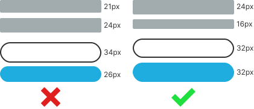
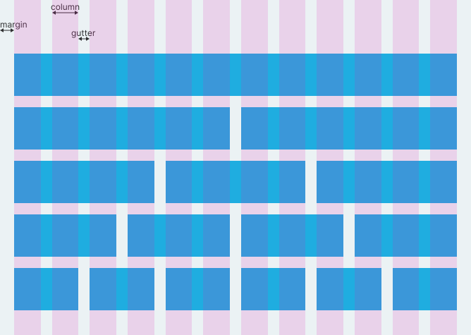
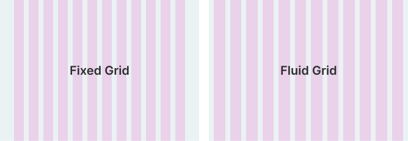
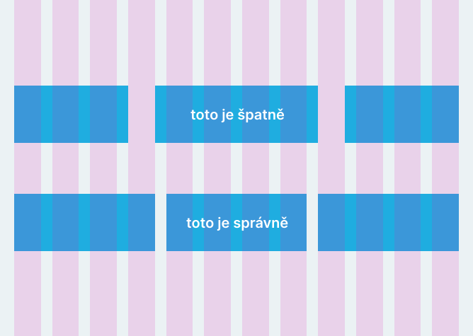
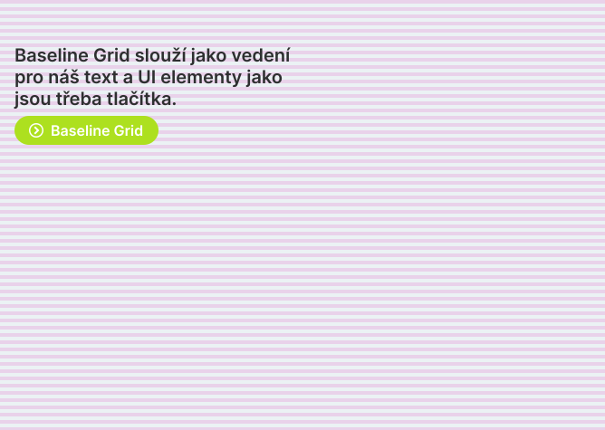

Grid
Webové stránky se navrhují podle gridu (mřížky). Grid nám při návrhu webové stránky pomáhá na stránce rovnoměrně uspořádat obsah.
Základní jednotka
Předtím než vůbec začneme s návrhem designu webových stránek, tak si musíme určit, jaká bude naše základní jednotka. Všechny rozměry našich UI elementů a mezery mezi nimi by měli být inkrementem této základní jednotky. Základní jednotka dělá náš design konzistentním a snižuje počet rozhodnutí, která musíme jako designéři při volbě rozměrů udělat.
Jakou si určíme základní jednotku je na nás. Já například používám jako základní jednotku 8 pixelů a na nějaké věci si ji ještě rozpůlím a používám 4 pixely.
Následující ukázka ukazuje UI, které pro rozměry používá základní jednotku, a UI, které ji nepoužívá. Možná to na vás teď může působit jako bezvýznamný rozdíl, ale pokud bych vám ukázal nějaký reálnější příklad, tak byste možná uznali, že to jestli základní jednotku používáme nebo ne může mít na náš design velký vliv.
Rozmisťování obsahu podle gridu
Jednotlivé prvky rozmisťujeme po webových stránkách pomocí gridu. Většinou používáme dva typy gridů: sloupcový a baseline. Pro některé typy designů si ale můžeme klidně vytvořit i jiné.
Sloupcový grid
Základní grid, který při návrhu webových stránek používáme, je sloupcový grid. Ukazuje jej následující obrázek. Většinou se používá 12 sloupců, protože tak řádky můžeme jednoduše rozdělit na poloviny, třetiny, čtvrtiny nebo třeba šestiny.
Velikost našeho sloupcového gridu můžeme omezit na nějakou šířku, nebo jej nechat přes celou šířku okna prohlížeče bez ohledu na jeho velikost. Gridu, který se stále roztahuje přes celou velikost okna se říká Fluid Grid a gridu, který nemění svou velikost se říká Fixed Grid.
Elementy, které na webovou stránku podle gridu umisťujeme, by měli začínat a končit sloupcem. Neměli by začínat nebo končit mezerou mezi sloupci. Následující obrázek ukazuje špatné a správné rozmístění elementů podle gridu.
Baseline grid
Dalším typem gridu, který při návrhu webových stránek používáme, je baseline grid. Tento grid nám poskytuje vedení pro typografii a UI elementy. Baseline Grid se skládá z obdelníků umístěných pod sebou po celé výšce stránky. Já jejich výšku nastavuji na polovinu mé základní jednotky. Pokud tedy jako základní jednotku používám 8 pixelů, tak jim nastavím výšku 4 pixely.
Pokud má jeden obdelník baseline gridu výšku 4 pixely, tak musíme velikost a výšku řádku našeho textu nastavovat v inkrementech této hodnoty, aby se nám text do gridu přesně vešel.
